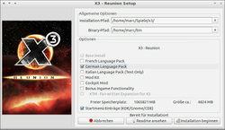

LGP
Dieser Artikel wurde für die folgenden Ubuntu-Versionen getestet:
Dieser Artikel ist größtenteils für alle Ubuntu-Versionen gültig.
Zum Verständnis dieses Artikels sind folgende Seiten hilfreich:
Der LGP-Installer ist ein distributionsunabhängiges Installationsskript von Spielen, welcher durch Linux Game Publishing  vertrieben wurde. Dieses ist auf dem jeweiligen Medium vorhanden - zum Download stehen mitunter aktualisierte Skripte und Patches bereit. Die Funktionsweise entspricht der des Loki-Installers. Linux Game Publishing hatte sich auf die Portierung von Windowsspielen spezialisiert.
vertrieben wurde. Dieses ist auf dem jeweiligen Medium vorhanden - zum Download stehen mitunter aktualisierte Skripte und Patches bereit. Die Funktionsweise entspricht der des Loki-Installers. Linux Game Publishing hatte sich auf die Portierung von Windowsspielen spezialisiert.
Eine Liste der verfügbaren Spiele war auf der Internetpäsenz einsehbar.
Installation¶
Datenträger¶
Einzelplatzrechner¶
Um ein Spiel als Benutzer installieren zu können, genügt es das Skript zu starten. Im Vorfeld muß es jedoch ausführbar [3] gemacht werden:
chmod +x DATEINAME.run
Anschließend kann die Installation aus einem Dateimanager heraus erfolgen. Im sich nun öffnenden Fenster stehen folgende Einstellungsmöglichkeiten zur Verfügung:
| Installer | |
| Menüpunkt | Beschreibung |
| Installationspfad | Pfad in den das Spiel installiert werden soll - ggf. anpassen. |
| Pfad des symbolischen Links | keine Änderung vornehmen |
| Options | Auswahl zusätzlich zu installierender Komponenten z.B. Sprachpakete oder Videos. |
| Startup menu entries (KDE/Gnome) | Eintrag im Menü anlegen. |
Nachdem man seine Auswahl getroffen hat, wird das Spiel durch "Begin install" im Homeverzeichnis des Benutzers installiert. Jedoch können andere Benutzer nicht ohne weiteres dieses Spiel starten.
|  |
| Installer |
Mehrbenutzersystem¶
Diese Installationsvariante gestattet es mehreren Benutzern das Spiel zu starten. Hier öffnet man ein Terminal [1] [4] und gibt dort Folgendes ein:
cd /media/cdrom0 # Verzeichnis öffnen sudo ./name_des_spiels.run # Starten des Skriptes
Hier wird das Spiel nach /usr/local/games installiert. Den Installationspfad kann man bei Bedarf ändern. Außerdem werden eine Verknüpfung in /usr/local/bin angelegt und ein Menüeintrag erstellt, damit jeder Benutzer das Spiel starten kann.
Ubuntu Software-Center¶
Über das Ubuntu Software-Center können einige Titel von LGP erworben werden. Die zur Installation [4] benötigten Daten werden per E-Mail übermittelt.
Installer¶
Aktuelle Installationsroutinen stehen auf einigen Servern zur Verfügung und können von diesen herunterladen sowie wie in Installation beschrieben verwendt werden.
Spieleupdate¶
Um ein Update auszuführen, kann man den manuellen Weg wählen, da die automatische Funktion nich mehr funktioniert. Man lädt sich hier von einem der Server das gewünschte Update zum gewünschten Spiel herunter. Nun installiert man dieses wie unter Installation beschrieben.
Server¶
Eine Auflistung von alternativen Servern, da LGP nicht erreichbar ist:
holarse-linuxgaming.de
 - Demos und Updates
- Demos und Updatespatches-scrolls.com
- Updates
Spielstart¶
Den Spielen können beim Start [2] Parameter mitgegeben werden. So startet z.B.
jets -w
Das Spiel im Fenstermodus. Im Homeverzeichnis wird der versteckte Unterordner .lgp angelegt. In diesem befindet sich für jedes installierte Spiel ein weiterer Ordner, in welchem die Profile, Einstellungen, Bildschirmfotos und Aufzeichnungen hinterlegt werden.
Ein kleine Übersicht:
| Parameter | |
| Parameter | Funktion |
-s | ohne Sound |
-w | Fenstermodus |
-f | Vollbid |
-v | Version |
-g [x] | [x] anstelle von /usr/lib/libGL.so.1 von OpenGL verwenden. |
--nocdrom | Für die Musikwiedergabe nicht auf CD zugreifen. |
-h | Hilfe - Anzeige weiterer möglicher Parameter. Diese können je nach Spiel variieren. |
| LGP Security System Manager |
Kopierschutz¶
Bei der Installation einiger neuerer Spiele setzte LGP auf einen Kopierschutz. Nach der Installation wurde der Schlüssel aus dem Handbuch, ein Passwort und optional die eigene E-Mail-Adresse benötigt. Passwort und Schlüssel wurden mit dem LGP-Server abgeglichen. Sofern man das Passwort vergessen hatte konnte man es sich per Email zusenden lassen - falls hinterlegt.
Das jeweilige Spiel konnte beliebig auf eigenen PCs installiert werden. Passwort und CD-Key genügten.
Hinweis:
Bei diesem Verfahren wurde auf eine Internetaktivierung gesetzt. Eine Aktivierung war Offline nicht möglich. Dies konnte bei einem Serverausfall zu Problemen  führen. Da die Server nicht mehr erreichbar sind kann die Aktivierung eines Titels nicht mehr vorgenommen werden.
führen. Da die Server nicht mehr erreichbar sind kann die Aktivierung eines Titels nicht mehr vorgenommen werden.
Deinstallation¶
GUI¶
Mittels des Uninstallers kann man die Spiele relativ einfach deinstallieren unter
"Anwendungen -> Spiele -> LGP -> LGP Uninstall".
Hier das gewünschte Spiel anwählen und "Deinstallieren" wählen.
Terminal¶
Alternativ kann die Deinstallation über das Terminal [1] durchgeführt werden. Das Skript liegt im Ordner ~/.lgp/installed/bin/Linux/x86 und wird über
./uninstall -l
aufgerufen. Nun kann man ersehen, welche Spiele auf dem System installiert sind:
Installierte Produkte: ballistics: installed in /home/marc/Spiele/ballistics candycruncher: installed in /home/marc/Spiele/candycruncher gorky17: installed in /home/marc/Spiele/gorky17 hdb: installed in /home/marc/Spiele/hdb jets: installed in /home/marc/Spiele/jets knights: installed in /home/marc/Spiele/knights LGP_Uninstall: installed in /home/marc/Spiele/.LGP_Uninstall LGP_Update: installed in /home/marc/Spiele/.LGP_Update majesty: installed in /home/marc/Spiele/majesty ningpo: installed in /home/marc/Spiele/ningpo sacred: installed in /home/marc/Spiele/sacred shadowgrounds: installed in /home/marc/Spiele/shadowgrounds testtool: installed in /home/marc/Spiele/testtool x2: installed in /home/marc/Spiele/x2 x3: installed in /home/marc/Spiele/x3
Um das Spiel NingPo Mahjong zu deinstallieren gibt man nun folgenden Befehl ein:
./uninstall ningpo
Hinweis:
Hat man das Spiel als Root [4] installiert, so sollte der Menüeintrag abgeändert werden, damit man auch Spiele deinstallieren kann die nicht im Heimatordner liegen. Der Eintrag sieht dann wie folgt aus: gksudo /usr/local/games/LGP_Uninstall/lgp_uninstall.
Problemlösungen¶
Testtool¶
Test-Tool ist ein Programm zur Überprüfung von Problemen auf dem System. So kann u.a. direkt überprüft werden ob Direct Rendering möglich ist. Nach der Installation ist es unter "Anwendungen -> Spiele" zu finden.
POSIX2¶
Portable_Operating_System_Interface ist eine Schnittstelle zwischen Anwendung und dem Betriebssystem. Programme aus den coreutils z.B. tail und chown nutzen den neuen POSIX-Standard von 2001. Beim Start einer veralteten Installationsroutine kann die folgende Fehlermeldung erscheinen:
Verifying archive integrity...tail: „+6“ kann nicht zum Lesen geöffnet werden: No such file or directory Error in check sums 3279358048 2069455402
Einige ältere Routinen bauen auf dem Standard von 1992 auf. Um diese nutzen zu können kann man mit einer Umgebungsvariablen den alten Standard erzwingen. Dies umgeht man beim Aufruf [1] mit einem vorangestellten _POSIX2_VERSION=199209. Im Beispiel wird die Installation des Skripts foo.run für ein Mehrbenutzersystem durchgeführt:
sudo _POSIX2_VERSION=199209 sh ./foo.run

- Erstellt mit Inyoka
-
 2004 – 2017 ubuntuusers.de • Einige Rechte vorbehalten
2004 – 2017 ubuntuusers.de • Einige Rechte vorbehalten
Lizenz • Kontakt • Datenschutz • Impressum • Serverstatus -
Serverhousing gespendet von